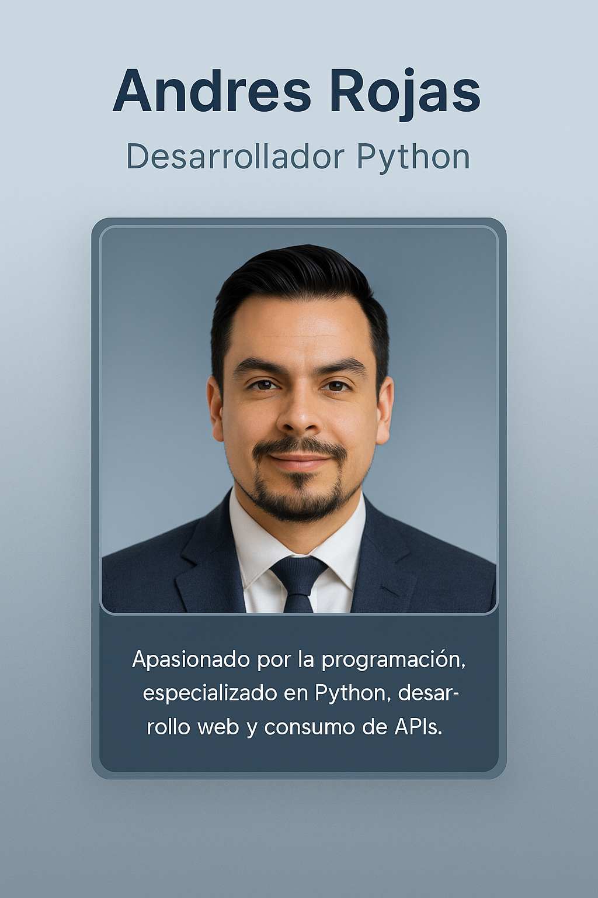

¡Hola! Soy Andres Rojas
Desarrollador Python
Sobre mí
Apasionado por la programación, especializado en Python, desarrollo web y consumo de APIs.
Tecnologías que uso


Proyectos
-
Aplicación de Chistes Chuck Norris -
Ver en GitHub
Aplicación web desarrollada con Flask que consume una API para mostrar chistes aleatorios de Chuck Norris. -
CRUD de Contactos Web -
Ver en GitHub
Sistema web CRUD que permite crear, leer, actualizar y eliminar contactos usando Python, Flask y SQLite. -
Cajero Automático con Tkinter -
Ver en GitHub
Aplicación de escritorio desarrollada en Python con interfaz gráfica en Tkinter para simular un cajero automático.
Contacto
Correo: andresrojas9001@gmail.com
Teléfono: +57 311 2776590
GitHub: Arock900
Contáctame por WhatsApp